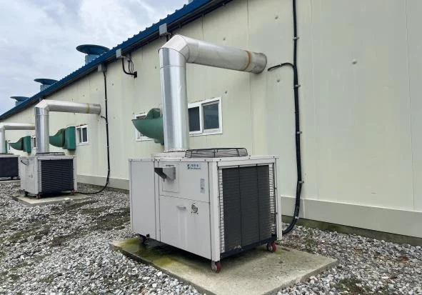

돼지유행성설사 겨울 차단방역｜차량·장화·분만사 동선 점검

돈사 외부 설비 참고 사진. PED 발생 농장이나 소독 작업 사진은 아닙니다.
농림축산식품부는 11월 26일 돼지유행성설사(PED) 예방을 위한 차단방역과 백신 관리를 강조했습니다. 외부 오염이 분만사까지 들어오는 경로를 끊는 점검부터 시작하세요. 항체 조사 수치를 농장 전체의 감염률로 해석하면 안 됩니다.
항체 조사 결과가 뜻하는 범위를 구분합니다
2026년 조사에서는 271농가 모돈 858마리 중 특정 기준 이상 항체가를 보인 개체가 85마리, 9.9%로 안내됐습니다. 전년도 41.6%와의 차이는 31.7퍼센트포인트입니다. 이는 조사된 모돈의 해당 항체 기준 결과로, 전국 돼지의 90.1%가 감염됐다는 뜻도 모든 농장의 면역 상태가 같다는 뜻도 아닙니다.
차량에서 돈사로 이어지는 접점을 적어보세요
PED는 분변에 오염된 사람·장화·기구·차량 등을 통한 전파에 주의해야 합니다. 출입 차량의 세척·소독 기록, 운전자의 이동 범위, 돈사 전용 장화와 도구, 청결·오염 구역 구분을 확인하세요. 분변 등 오염물을 제거한 뒤 제품 표시사항에 맞춰 소독해야 합니다. 겨울철 동결 여부와 약제의 온도·접촉시간 조건도 점검합니다.
| 접점 | 오늘 확인 | 기록 |
|---|---|---|
| 농장 입구 | 차량 세척·소독·운전자 동선 | 출입·소독 일시 |
| 돈사 출입 | 전용 장화·작업복·손 위생 | 구역별 준비물 |
| 분만사 | 모돈 접종·초유 관리 | 분만 예정표·수의사 계획 |
| 의심 증상 | 돈방·일령·시작일·마릿수 | 상담·검사 요청 시각 |
백신과 초유 관리는 담당 수의사와 농장별로 확인합니다
분만 예정 모돈의 접종 이력과 일정, 초유 섭취 관리, 후보돈 도입·격리 절차를 수의사와 검토하세요. 농장의 감염·백신 이력과 제품에 따라 계획이 달라집니다. 다른 농장의 접종 횟수나 약품을 그대로 적용하지 마세요. 오염물을 먹여 면역을 만들려는 방식은 이 안내의 관리법이 아닙니다.
설사·구토나 폐사가 보이면 이동과 작업을 구분합니다
발생 돈방, 시작 시각, 마릿수, 일령, 증상과 최근 이동 내역을 기록하고 수의사·방역기관에 즉시 상담합니다. 같은 장화와 도구로 여러 돈방을 오가며 확인하지 말고 농장 방역 절차에 따라 작업자를 배치하세요. 사진과 기록은 진단에 도움이 되지만 원인을 확진하는 검사와 현장 판단을 대신하지 않습니다.
작업 전 점검표
- 청결·오염 구역과 도구를 분리했다
- 소독제 동결·농도·접촉시간을 점검했다
- 분만 일정과 접종 이력을 수의사와 대조했다
방역 점검은 소독 횟수만 세는 일이 아닙니다. 오염이 어느 동선을 따라 들어오는지 확인하는 일입니다.